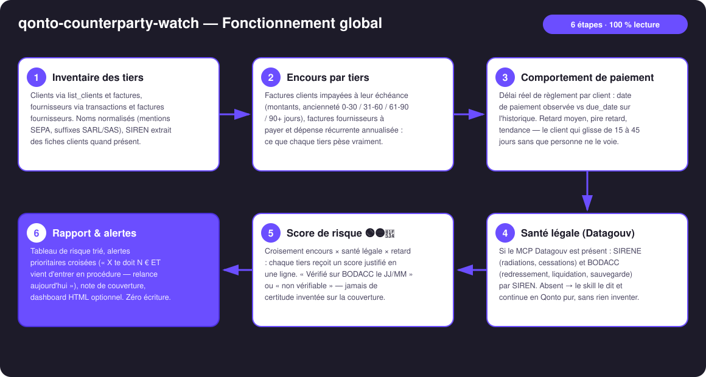
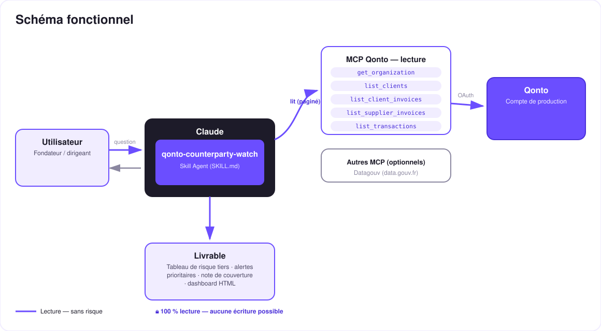

Savoir qui te doit de l'argent… et qui coule — le radar tiers de ton compte Qonto.
Un impayé fait mal. Un impayé chez un client déjà en redressement judiciaire peut être perdu pour toujours — et personne ne t'a prévenu. Le skill transforme le compte Qonto en radar tiers :
Impayés clients (montants, ancienneté 0-30 / 31-60 / 61-90 / 90+), engagements fournisseurs, récurrence annualisée.
Délai réel observé vs due_date : retard moyen, pire retard, tendance qui se dégrade par client.
SIRENE (radiations, cessations) + BODACC (redressement, liquidation, sauvegarde), datés — si le MCP Datagouv est présent.
Encours × santé légale × retard → alertes croisées : « X te doit N € ET vient d'entrer en procédure — relance aujourd'hui ».
| Prérequis | Détail | Obligatoire |
|---|---|---|
| Compte Qonto production | Le skill s'adapte à toute organisation — get_organization d'abord, zéro donnée en dur | ✅ |
| Pays | Santé légale : France (SIRENE + BODACC). Autres pays Qonto (DE, ES, IT…) : dégradation propre — le cœur Qonto (encours + retards) marche partout, jamais de registre inventé | ℹ️ détecté |
| MCP Qonto connecté | Connecteur officiel (claude.ai / Claude Desktop), login OAuth | ✅ |
| MCP Datagouv | Détecté dynamiquement. Absent → le skill le dit et livre le scoring Qonto pur | ⭕ recommandé — active la santé légale |
| SIREN des tiers | Extrait des fiches clients (tax_identification_number : TVA FR = SIREN + 2 clés) ou du nom exact. Sans SIREN → « non vérifiable », annoncé | ⭕ |
| Historique de factures | Plus il y a de factures payées, plus le retard moyen par client est fiable | ⭕ |


100 % lecture, zéro écriture : le skill n'appelle aucun outil d'écriture Qonto — rien à approuver, rien à exécuter. Il croise deux mondes qui ne se parlent jamais : ton compte Qonto (qui te doit quoi) et les registres publics (qui coule). La donnée sort, rien ne rentre.
| Score | Déclencheurs | Exemple d'alerte |
|---|---|---|
| 🔴 Critique | Procédure collective ouverte ou radiation avec encours ; impayé 90+ jours significatif | « Doit 9 700 €, redressement publié récemment → déclarer la créance (délai 2 mois) + relance recommandée » |
| 🟡 À surveiller | Tendance de paiement qui se dégrade ; gros encours non vérifiable ; procédure trouvée sans encours actuel | « Retard moyen passé de 12 à 38 jours sur les 3 dernières factures » |
| 🟢 Sain | Vérifié sans signal (avec date) et paiements dans les temps | « ✅ BODACC vérifié le 11/07, rien trouvé · retard moyen 4 jours » |
| Registre | Signal | Verdict porté sur la ligne |
|---|---|---|
| SIRENE | Statut administratif : actif, cessation, radiation | « Actif au JJ/MM » / « Radié le JJ/MM » — toujours daté |
| BODACC | Procédures collectives : redressement, liquidation, sauvegarde (dates de publication) | « Procédure publiée le JJ/MM » / « rien trouvé le JJ/MM » / « non vérifiable » |
| Sortie | Format | Quand |
|---|---|---|
| Réponse dans la conversation | Tableaux markdown (risque trié, alertes, couverture) | Toujours — c'est la base |
| Dashboard interactif | Fichier/artifact HTML : matrice encours × santé, ancienneté, cartes d'alerte | Si l'hôte affiche les fichiers (artifacts claude.ai, Claude Desktop, Claude Code) ; repli automatique sur les tableaux sinon |
| Note de couverture | Compteurs vérifiés / non vérifiables / registre indisponible | À chaque rapport — l'honnêteté fait partie du livrable |
La démo ≤ 3 min jointe à la PR suit le storyboard : problème → tableau de risque sur compte réel → le moment croisé (un impayé réel qui rencontre une procédure BODACC) → dashboard final. Tournée en live sur un compte de production réel.
| Idée | Effort | Note |
|---|---|---|
| Registres européens (Handelsregister DE, Registro Mercantil ES…) | Moyen | Qonto est paneuropéen ; v1 = France, v2 = un module registre par pays |
| Brouillon de relance par email (MCP Gmail détecté dynamiquement) | Faible | Multi-MCP optionnel — brouillon seulement, jamais d'envoi automatique |
| Diff entre deux scans (« nouveau 🔴 depuis lundi ») | Moyen | Le rituel du lundi matin devient un delta, pas un rapport complet |
| Score de dépendance fournisseur (part des achats) | Faible | Réutilise l'inventaire, éclaire le risque de rupture |